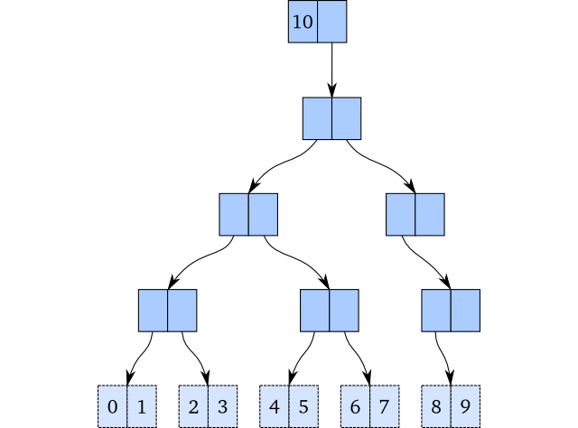
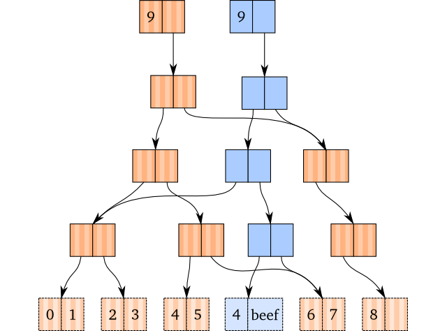
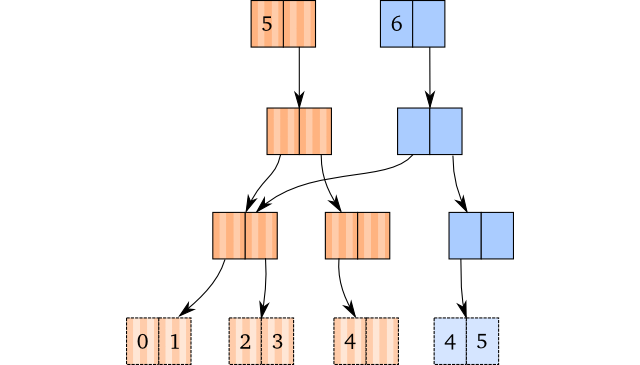
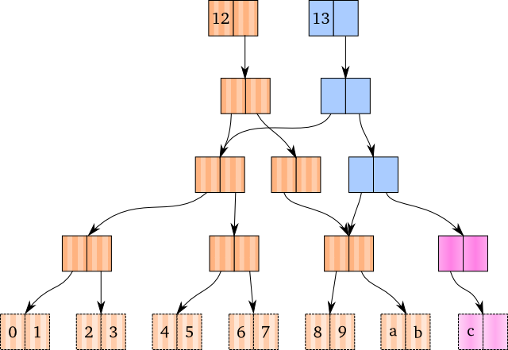
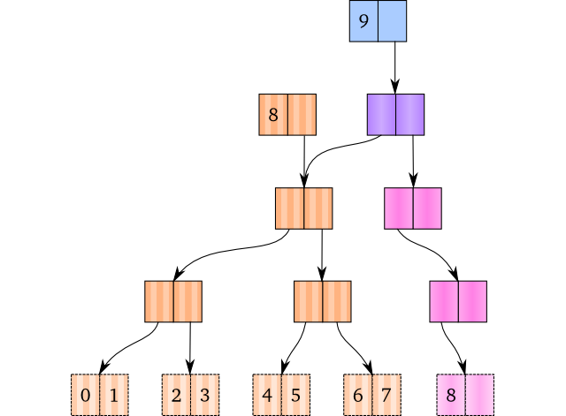

Exkurs: Persistent Data Structures
Reaktive Programmierung
Ziele
Antwort auf die Frage: Wie kann die Manipulation von mutationsfreien Datenstrukturen, wie sie in funktionalen Programmiersprachen überlich sind, effizient implementiert werden?
Funktionale Datenstrukturen
Imperative Datenstrukturen
- Änderungen an imperativen Datenstrukturen basieren auf dem Prinzip der Mutation.
Was ist das Resultat des folgenden C-Programms?
#include <stdio.h> int main () { /* Deklaration und Initialisierung eines Arrays */ int v[ 5 ] = {100, 101, 102, 103, 104}; int j; /* Ausgabe der Array-Elemente*/ for (j = 0; j < 5; j++ ) { printf("Element[%d] = %d\n", j, v[j] ); } /* Änderung eines Array-Elements und erneute Ausgabe*/ v[4] = 0; for (j = 0; j < 5; j++ ) { printf("Element[%d] = %d\n", j, v[j] ); } return 0; }
Ausgabe in der Shell
$gcc -o main *.c $main Element[0] = 100 Element[1] = 101 Element[2] = 102 Element[3] = 103 Element[4] = 104 Element[0] = 100 Element[1] = 101 Element[2] = 102 Element[3] = 103 Element[4] = 0
- Stichwort: Place oriented Programming
Funktionale Datenstrukturen
- Funktionale Datenstrukturen sind nicht änderbar.
Beispiel in Clojure
;; Deklaration und Initialisierung eines "Arrays" (vector) (def v [100, 101, 102, 103, 104]) ;;Ausgabe der Array-Elemente v ;; => [100 101 102 103 104] ;; Änderung eines Array-Elements (assoc v 4 0) ;; => [100 101 102 103 0] ;; erneute Ausgabe von v v ;; => [100 101 102 103 104]
#'user/v[100 101 102 103 104][100 101 102 103 0][100 101 102 103 104]
- Welche Frage drängt sich hier auf?
Effiziente Implementierung
- Ideen basieren auf Okasakis Buch Purely Functional Data Structures [Okasaki1999]
- Jede Operation, die den Wert einer Datenstruktur ändert, erzeugt ein neues Exemplar von ihr.
- Da nach der Ausführung von Änderungsoperationen, die vorangegangen Versionen der Datenstruktur existieren, spricht man auch von persistenten Datenstrukturen.
- Das einfache Anlegen von Kopien führt nicht zu akzeptablen Laufzeiten.
- Die Lösung besteht in der Verwendung von Baumstrukturen, die ermöglichen
- Redundanzen der „Kopien“ so weit wie möglich zu vermeiden und
- trotzdem einen schnellen Zugriff auf die Elemente bereit zu stellen.
Exemplarische Darstellung für Vektoren in Clojure
- Verwendet werden Strukturen, die Binärbäumen ähneln.
- Die internen Knoten enthalten keine Daten, sondern nur Verweise auf (maximal zwei) Nachfolger-Knoten.
- Die Blätter enthalten maximal zwei Elemente der Datenstruktur – des Vektors.
- Die Blätter sind nach den Indizes geordnet.
- Das folgende Bild zeigt einen Vektor mit den ganzzahligen Werten 0 bis 8.
(Diese und die folgenden Abbildungen sind aus Polymatheia entnommen.)

- Wollte man die Zahl 9 dem Vektor hinzufügen, entstünde in der „imperativen Welt“ das folgende Bild:

- Die vorherige Version des Vektors wäre nicht mehr existent.
- Um Persistenz zu erreichen und den Kopieraufwand zu minimieren werden Pfadkopien eingesetzt.
Die Änderungsoperation
- Um ein Vektorelement zu ändern, verfolgt man den Pfad bis zu dem Element, das geändert werden soll.
- Dabei werden alle Knoten des Pfads kopiert.
Schließlich wird der Blattknoten kopiert und das Element durch das neue ersetzt.
Beispiel:
(def brown [0 1 2 3 4 5 6 7 8]) (def blue (assoc brown 5 'beef))
- Rückgabewert ist der neue Pfad.

Anhängen eines Elements
- Drei Fälle sind zu unterscheiden:
- Im Blatt ganz rechts ist noch Platz für das neue Element.
- Es gibt noch unbelegte Zweige aber kein Platz im Blatt ganz rechts.
- Der existierende Baum ist bereits vollständig belegt.
Fall 1
Vorgehensweise entspricht weitgehend der Änderungsoperation.
Beispiel:
(conj [0 1 2 3 4] 5)

Fall 2
- Neue Knoten werden bei Bedarf erzeugt.
- Kopierte Knoten sind blau, neu erzeugte Knoten rosa dargestellt.

Fall 3
- Die neue Wurzel ist violett, die übrigen neu erzeugten Knoten sind wieder rosa dargestellt.

Entfernen von Elementen
- Hier sind ähnliche Überlegungen wie beim Hinzufügen von Elementen anzustellen.
- Die gezeigten Beispiel decken nur einen kleinen Bereich des Themas funktionale Datenstrukturen ab.
- Weitere Beispiele in Polymatheia.
- Umfassende Darstellung in [Okasaki1999].
Effizienzbetrachtung
- Die geschilderten Operationen haben für imperative Datenstrukturen die Laufzeitkomplexität \(O(1)\).
- Für die oben benutzten Binärbäume gilt \(O(log_2 n)\).
- Um sich an \(O(1)\) anzunähern, könnten die Binärbäume durch Mehrwegbäume ersetzt werden.
- Clojure benutzt einen Verzweigungsgrad von 32.
- Bei einer Anzahl von Elementen kleiner \(10^9\) ist die Baumtiefe nicht größer als 6.